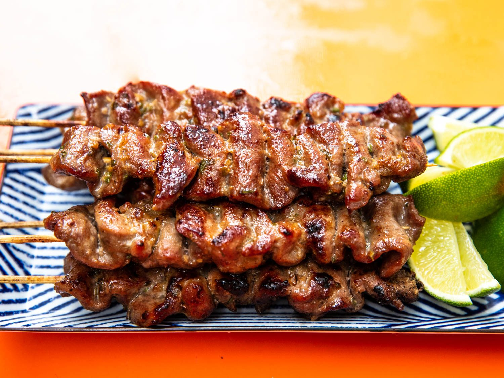

|

|
Description
Pork barbecue in bamboo skewers is what Filipino Style Pork BBQ is all about. It is composed of thinly sliced pork pieces that are marinated in a special mixture of seasonings and spices. In the Philippines, it is normally grilled over wood charcoal and dipped in a tall jar of spicy vinegar before eating.
Ingredients
6 pounds pork butt, sliced to 1-inch wide and 1/4-inch thick
3 cups 7-up
2 cups soy sauce
2 cups vinegar
2 cups oyster sauce
3 cups brown sugar
1 tablespoon ground black pepper
1 cup garlic, peeled and minced
10 Thai chili peppers (siling labuyo), minced
2 cups banana ketchup
1/2 cup sesame oil
Procedure
1. Rinse pork strips and drain well. Pat dry.
2. In a large bowl, combine 7-up, soy sauce, vinegar, 1 cup of the oyster sauce, brown sugar, garlic, black pepper, and chili peppers.
3. Add pork and massage meat to fully incorporate. Marinate, turning meat once or twice, in the refrigerator for at least 4 hours or overnight for best results.
4. Thread 2 to 3 meat slices onto each skewer.
5. In a bowl, combine remaining 1 cup of oyster sauce, banana ketchup, and sesame oil. Set aside.
6. Grill meat kebabs over hot coals for about 2 to 3 minutes each side.
7. When pork starts to lose its pink, baste with oyster sauce-ketchup mixture. Continue to grill and baste, turning on sides, until meat is cooked through. Remove from heat and serve as is or with spicy vinegar dip.
Price
P15 / stick
|